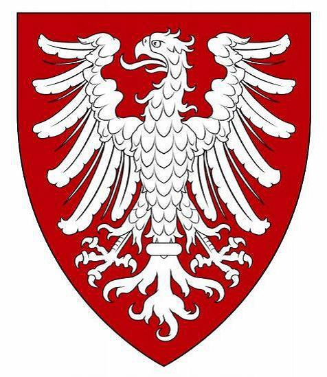

16352099011 Grevinnan Lutrud von Itter
* omkring 1085
† omkring 1149 Schwalenberg, Tyskland
Grevinna av Schwalenberg
Blev ca 64 år
32704198022 Edelherr Gumbert von Itter
* 1065 Itter, Dusseldorf, Tyskland
† 1127 Itter, Dusseldorf, Tyskland
Blev högst 62 år
65408396044 Rembert von Itter
* 1030 Medebach, Arnsberg, Tyskland
† 1068
Blev högst 38 år
65408396045 Witherold von Rembersweibe

32704198023 Mechtild Gepa (Gerberga) von Werl-Arnsberg
* omkring 1070 Detmold, North Rhine-Westphalia, Tyskland
† omkring 1135
Blev ca 65 år
65408396046 Greve Konrad II von Werl-Arnsberg
* omkring 1040 Werl, Tyskland
† 1092 Friesland, Nederländerna
Greve av Werl-Arnsberg
Blev ca 52 år
65408396047 Mechtild (Matilde) von Northeim
* omkring 1050 Northeim, Tyskland
130816792094 Hertig Otto II von Northeim
* omkring 1015
† 1083
Hertig av Bavaria, Greve av Northeim
Blev ca 68 år
130816792095 Richenza
* omkring 1015
† före 1063
Blev ca 47 år